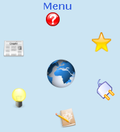

Dans ce tutoriel, je vais vous expliquer comment créer un menu circulaire sympa. J'utilise ce menu sur mon site et je voulais partager son style qui peut rendre votre site plus original qu'un autre. Ce menu est développé en Javascript avec un peu de CSS et de xHTML. Je vous conseille de relire le tutoriel de M@teo si vous ne vous rappelez pas vraiment du CSS et du xHTML. Il peut aussi être pratique de connaître le cercle trigonométrique ; pour plus d'informations, lisez le tutoriel de Kayl, annexe sur la trigonométrie.
Voici un aperçu du résultat que vous obtiendrez après ce tutoriel :

C'est le menu de mon ancien site, il est bien sûr animé. Le style est évidemment paramétrable à votre guise, c'est simplement du CSS. Voici un exemple de menu créé à partir des codes donnés dans ce tutoriel (Il n'y a pas de CSS additionnel) : Exemple de menu circulaire animé
Pour faire un site, vous savez sûrement qu'il faut connaître le xHTML et aussi le CSS. Enfin, le CSS n'est pas obligatoire mais fortement conseillé. Ici, nous allons faire la partie concernant le CSS et le xHTML du menu, l'armature si vous voulez.
Un menu est souvent, voire même tout le temps, une liste. Nous allons donc créer la liste. Voici le code :
Le div appelé centre, c'est le centre du menu. Nous nous servirons de ses positions et de sa taille pour faire tourner le menu. Je vous propose de faire un lien vers la page d'accueil au centre du menu. Mettez bien le tout dans un div dont l'id est "menu", ça servira pour l'animation du menu, dans la prochaine partie du tutoriel. Il servira aussi pour le style, pour avoir un style différent du reste du site, pour le h2 par exemple.
Évitez cependant d'avoir trop de boutons, il faudrait alors agrandir le div "menu" pour éviter que les boutons ne se chevauchent.
Passons maintenant au CSS. Il est utile d'avoir un menu accessible pour les gens qui désactivent le Javascript et croyez-moi, ils sont nombreux. Le menu ne doit pas être animé en CSS mais il doit tout de même être utilisable, d'où l'utilisation de la liste.
Voilà ; maintenant, quelques précisions : j'ai mis les border pour permettre de différencier les div. Le style peut évidemment être modifié à votre guise, les seuls éléments à laisser, ce sont les tailles de centre et le margin auto, ils permettent de faire un cercle autour du centre précisément. Pour le moment, rien de bien exceptionnel, un simple menu. Nous allons maintenant adapter le CSS pour l'animation. Pour que l'animation Javascript fonctionne, il faut ajouter ceci à votre fichier CSS, cela permet de donner une position absolue au bouton.
Maintenant que le CSS est fait, nous allons passer au Javascript, le plus compliqué intéressant. Commençons par créer un fichier Javascript. Faites simplement un fichier nommé "menu.js". N'oubliez pas d'inclure le fichier javascript au xHTML. Ajoutez simplement ceci entre les balises <head> et </head> :
Changez bien sûr le nom du fichier pour le nom du vôtre. Normalement, vous ne verrez pas de modification de votre menu étant donné que le fichier est vide.
Bon, maintenant, passons au contenu du fichier. Nous allons commencer par créer les variables principales.
var decalage = 0;
var nbBout;
var timer;
J'expliquerai ces variables quand nous les utiliserons.
Maintenant, la fonction principale : elle permet de créer le menu au chargement de la page.
function menu(nb)
{
var angle = 360 / nb;
nbBout = nb;
var posX;
var posY;
var rayon = 60;
var centreX = document.getElementById("centre").offsetLeft;
var centreY = document.getElementById("centre").offsetTop;
var lItem = 20;
var i = 1;
var item;
var b;
for(b = 0; b < 360; b += angle)
{
posX = centreX + 25 + rayon * Math.cos(b * Math.PI / 180);
posY = centreY + 25 + rayon * Math.sin(b * Math.PI / 180);
item = document.getElementById("item" + i);
item.className = "item";
item.style.top = (posY - lItem / 2) + "px";
item.style.left = (posX - lItem / 2) + "px";
i++;
}
}
Je vais maintenant expliquer ce code, qui peut sembler compliqué à première vue. Commençons par le paramètre : c'est en fait le nombre de boutons de votre menu, cela sert à diviser 360, l'angle d'un cercle, par le nombre de boutons. La variable angle est donc l'angle entre deux boutons. nbBout prend alors le nombre de boutons du menu, cela permet de rendre le nombre de boutons "public", je veux dire par là que toutes les fonctions pourront l'utiliser. Les variables posX et posY sont utilisées pour déclarer la position du bouton. Vous comprendrez par la suite. La variable rayon, c'est la distance en pixels entre le centre du cercle et le bouton ; j'ai mis 60, mais vous pouvez mettre plus si vous avez plus de boutons. centreX et centreY sont égales aux positions du div centre. La valeur de lItem est la largeur et la hauteur des boutons. Pour le moment, ça fonctionne comme ça mais nous verrons une autre solution plus tard. La variable i sert pour les boucles, c'est un peu ma variable passe-partout, nous l'utilisons pour le numéro du bouton.
Passons à la boucle maintenant. Nous faisons tourner la boucle jusqu'au moment où l'angle total est de 360°. Les deux lignes suivantes sont les plus compliquées, non pas au niveau programmation mais plutôt au niveau mathématique :
Eh oui, c'est de la trigonométrie. La variable posX est égale à la position du centre plus 25, la largeur du div central divisé par deux. En Javascript, pour utiliser des fonctions mathématiques, nous utilisons un objet, il est nommé Math ; cet objet regroupe des variables telles que la valeur de pi, les fonctions telles que cosinus, sinus, ... Toutes les fonctions utiles pour les mathématiques, quoi.
Nous utilisons ici cosinus, abréviation cos ; si vous connaissez un peu le cercle trigonométrique, vous savez que la position du point sur X est égale à cos ("l'angle"). Cependant, la fonction cos de Javascript prend l'angle en radians et non en degrés, c'est pourquoi nous utilisons Math.PI, qui fourni la valeur de Pi, qui peut aussi être remplacée par 3,14, le tout divisé par 180. Nous faisons la même chose pour la deuxième ligne sauf que la fonction est sin, pour sinus. Pour les matheux, voici la formule mathématique de ces lignes :
Enfin bon, si vous trouvez que ces lignes sont compliquées, ne vous en préoccupez pas, elles sont les plus importantes certes, mais vous ne devez pas spécialement savoir comment ça fonctionne pour que ça fonctionne. Au pire, si vous êtes têtus, comme moi, vous pouvez me demander des explications par message privé. La variable item est égale à l'item qui va être placé aux positions posX et posY. La ligne suivante permet de mettre class="item" au bouton.
Voilà, pour que vos boutons soient placés autour du centre, vous devez modifier la balise body comme suit :
<body onload="menu(5);">
Cela permet d'exécuter la fonction menu au chargement de la page.
Si vous essayez, vos boutons seront immobiles mais disposés autour du centre.
L'animation maintenant...
Nous allons maintenant passer à l'animation qui changera tout. La fonction suivante est très ressemblante à la fonction menu(), je ne vais donc pas l'expliquer en profondeur.
function anim()
{
decalage++;
var angle = 360 / nbBout;
var posX;
var posY;
var rayon = 70;
var centreX = document.getElementById("centre").offsetLeft;
var centreY = document.getElementById("centre").offsetTop;
var lCentre = 50;
var lItem = 20;
var i = 1;
var item
var b;
for(b = 0; b < 360; b = b + angle)
{
posX = centreX + 25 + rayon * Math.cos((b + decalage) * Math.PI / 180);
posY = centreY + 25 + rayon * Math.sin((b + decalage) * Math.PI / 180);
item = document.getElementById("item" + i);
item.style.top = (posY - lItem / 2) + "px";
item.style.left = (posX - lItem / 2) + "px";
i++;
}
}
Le seul changement, c'est l'utilisation de la variable c. Cette variable sert en fait à décaler les boutons par rapport à la valeur de c. La variable decalage prend 1 en plus à chaque passage de la fonction. Vous verrez pourquoi par la suite.
Si vous essayez maintenant, vous n'aurez pas de changements par rapport à la dernière fois. Vous devez en fait ajouter cette ligne à la fin de votre fichier :
timer = setInterval("anim()",50);
Cette ligne permet de démarrer la fonction anim() toutes les 50 millisecondes. Ça paraît rapide, je sais, mais un degré, c'est tout petit. Pour modifier la vitesse de rotation du menu, vous devez modifier la valeur du deuxième paramètre. Plus le nombre est grand, plus le menu tournera lentement.
Voilà : votre menu tourne maintenant, admettez que ça ajoute du dynamisme au site, non ?
Bon, c'est vrai qu'il tourne mais il n'est pas simple de cliquer sur un bouton en mouvement. Dans la partie "Améliorations sympas", j'explique comment arrêter les boutons au passage de la souris.
La première amélioration que je vous propose est l'arrêt des boutons au passage de la souris : ce n'est en fait pas très compliqué mais c'est quand même très pratique pour les utilisateurs.
Vous devez aussi avoir deux fonctions, l'une permettant d'arrêter l'animation et l'autre de redémarrer l'animation après le passage de la souris. Ces deux fonctions sont courtes. Voici la première fonction, elle permet d'arrêter l'animation.
function stopanim()
{
clearInterval(timer);
}
Cette simple fonction permet d'arrêter l'intervalle de la fonction setInterval(). C'est donc une fonction qui prend en paramètre le timer, d'où la variable timer en paramètre.
La fonction permettant de redémarrer l'animation, je pense que vous vous en doutez, est la suivante :
function replayanim()
{
timer = setInterval("anim()",50);
}
C'est simplement la remise à 50 de l'intervalle. C'est la même chose que la première fois que vous avez utilisé la fonction : le temps détermine la vitesse d'animation.
Pour permettre l'arrêt de l'animation, il faut encore mettre les événements xHTML. Voici comment faire. Remplacez la ligne suivante :
Voilà, votre menu est maintenant animé et les boutons s'arrêtent si vous passez la souris sur les boutons.
Si votre menu est un menu à icônes, il peut être bien de faire disparaître le texte lorsque la souris n'est pas au-dessus du menu, en conservant juste les icônes, mais en gardant le texte caché. C'est simple à faire et plutôt joli.
Voilà, vous avez maintenant un beau petit menu animé. Si vous avez éprouvé des difficultés, veuillez le signaler par message privé, je ferai mon possible pour vous aider et pour adapter mon tutoriel. Les idées d'améliorations sont aussi les bienvenues, je n'hésiterai pas à les y ajouter.